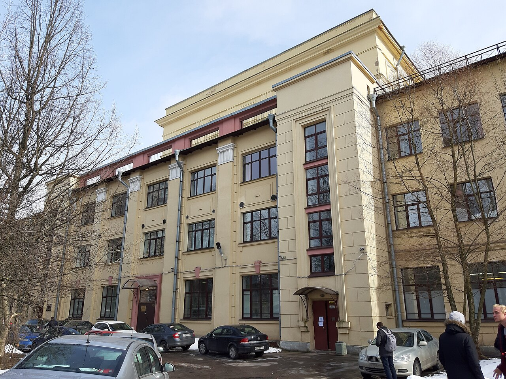
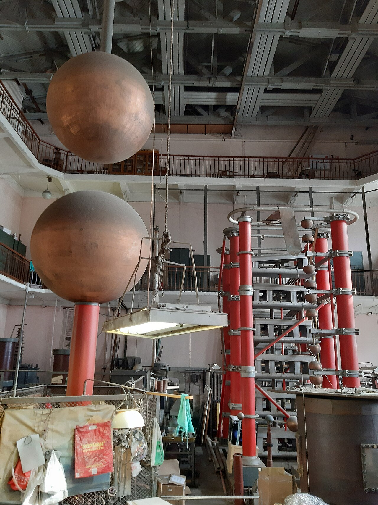
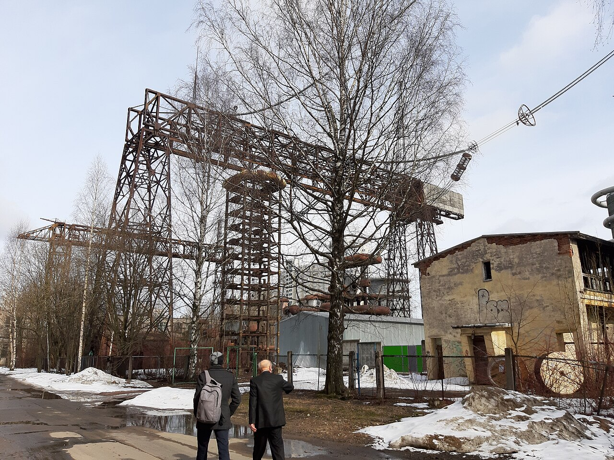
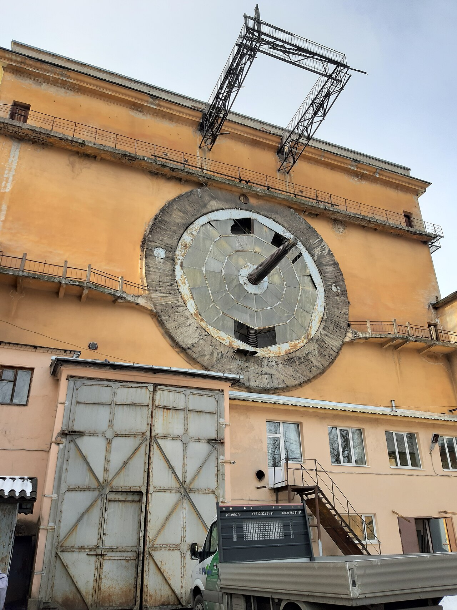

Занятия

Учебная неделя складывается из лекций, практических занятий и самостоятельной работы. На лекции разбирают тему, а на практике используют её в задачах. Перед занятием удобно просмотреть прошлый конспект и отметить непонятные места. Тогда проще следить за объяснением и задавать вопросы по существу.
Для каждого предмета полезно держать материалы в отдельной папке: конспекты, условия заданий и выполненные работы. Название файла лучше сразу делать понятным, например «Лабораторная 2». Перед парой стоит проверить номер аудитории и корпус. Это особенно важно, если занятия проходят в разных зданиях.
Лабораторные работы

В лабораторной важно не только получить результат, но и разобраться, как он получился. Обычно сначала нужно прочитать условие, выделить обязательные пункты и только потом приступать к работе. Перед сдачей полезно ещё раз пройти по требованиям и проверить, что ничего не забыто.
В курсе вёрстки результатом становится сайт, который можно открыть в браузере. Здесь первая работа посвящена структуре страниц и оформлению, а вторая — рисунку на CSS. Файлы разделены на HTML-страницы, стили и изображения. Выполненные задания находятся в разделе «Лабораторные».
Библиотека и материалы
Фундаментальная библиотека СПбПУ предоставляет учебную литературу, доступ к электронным ресурсам и помещения для самостоятельной работы. На её сайте можно найти каталог и сведения об обслуживании читателей. Список выданных книг и сроки возврата доступны в личном кабинете пользователя библиотеки.
Литературу для конкретного предмета лучше выбирать по рекомендациям преподавателя. У разных изданий могут отличаться обозначения и порядок тем. Если в конспекте не хватает объяснения, можно найти нужную главу в учебнике и разобрать пример. Для материалов курса также пригодится портал дистанционного обучения.
Кампус
Кампус Политеха включает исторические здания и современные учебные корпуса. На его территории есть парк, спортивные объекты, музей и Белый зал. Учёба не ограничивается одной аудиторией: между занятиями приходится переходить из корпуса в корпус, искать место для подготовки или встречаться с одногруппниками.
В начале семестра удобно заранее посмотреть расположение нужных зданий. Для этого на сайте университета есть карта кампуса. Актуальную информацию о работе подразделений стоит проверять на их официальных страницах. Фотографии здесь показывают отдельные здания и детали университетской территории, а не маршрут между аудиториями.


Сведения об университете: кампус СПбПУ, Фундаментальная библиотека.